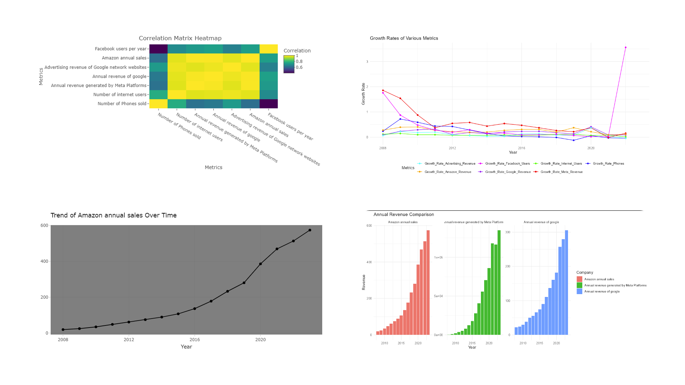
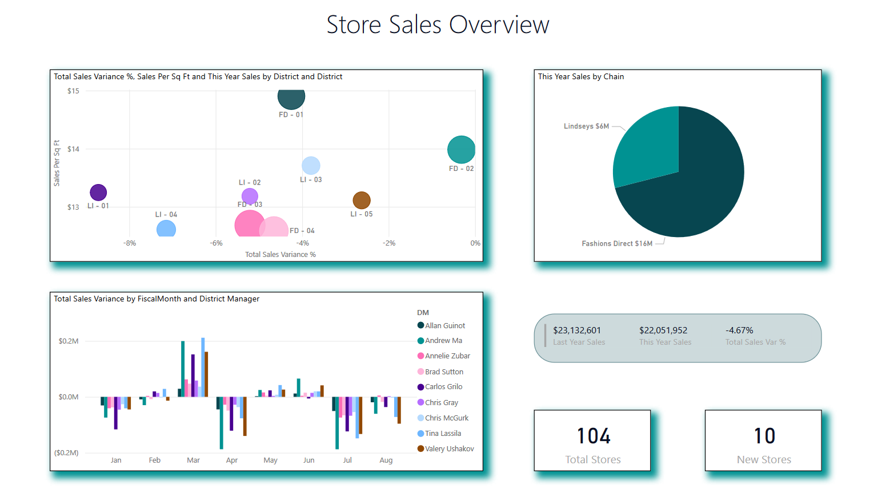

Featured Independent Projects
Comprehensive Analysis of Key Metrics
With an increasingly data-driven digital economy expanding globally, accurate metrics analysis and visualization are absolutely essential to making informed decisions. This Shiny application is a comprehensive, interactive platform that is equipped to analyze and interpret key business metrics for some of the largest tech companies and social media firms like Meta, Google, and Amazon. Availing the strong data science libraries of R, the app offers some tools for analysis such as trend visualization, correlation analysis, comparison of yearly revenue, growth rate calculation, and predictive modeling.Users can browse interactively how quantities like internet users, smartphone sales, and other revenue streams evolve over time, identify substantial correlations, and forecast future performance. Strong positive correlations between user activity and revenue growth are found, with dramatic accelerations seen in the late 2020s driven predominantly by the COVID-19 pandemic's acceleration of digital onboarding.It is a decision-making tool of strategy for users like investors, marketers, and analysts. It emphasizes the necessity of user acquisition, retention, and data-backed forecasting to thrive in the dynamic tech landscape. Its future incorporation could include machine learning and demographic analysis to provide even more insights.
Retail Sales Power BI Sample
This interactive Power BI dashboard provides a comprehensive overview of retail sales performance...
Sum of Powers Final Project
In this project, we will be generating a generalized function that would allow us to verify the results of Ho, Mellblom, and Frodyma for their theories on the sums of powers of consecutive integers. Once this is achieved and is working as desired, we'll then move on to compute the different questions or observations we've seen. Many of these quesitions and observations would consist of potential patterns and conjectures and counterexamples to the sum of powers.
Strategic Approaches to Limiting State Power

This theoretical exploration examines mechanisms to limit state power...
An Interactive Story Map on Sámi Culture

In tracing the journey of the Sámi drums, we uncover not only the socio-cultural and historical contexts surrounding these sacred artifacts but also the resilience and determination of the Sámi people to reclaim their heritage. From the meticulous collections of Johannes Schefferus to the missionary endeavors of Thomas von Westen, and the exhaustive efforts of Ernst Manker, the drums traveled through time and space, bearing witness to a tumultuous history of cultural suppression and colonial appropriation. Yet, amidst adversity, there emerged a beacon of hope in Ájtte, a bastion of Sámi heritage and resilience. Through the collective efforts of advocacy and negotiation, the Drum of Resilience and its counterparts found their way back home, symbolizing a reclaiming of identity and cultural autonomy. Now housed within Ájtte, these drums serve as powerful emblems of perseverance and cultural revival. Their rhythms echo through the museum halls, carrying the stories of generations past and inspiring future generations to embrace their heritage with pride. But the journey of the Sámi drums does not end here. As more artifacts find their way back to Sámi communities, each carrying with them a piece of history and a testament to the enduring spirit of a people determined to preserve their cultural legacy against all odds, the story continues to unfold. In the heart of Ájtte and beyond, the journey of the Sámi drums stands as a testament to the resilience of a people and the enduring power of culture to transcend boundaries and unite communities in the face of adversity.